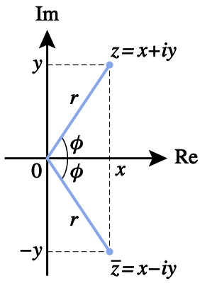

Przestrzenie wektorowe, stany kwantowe, reprezentacja klasycznych i kwantowych bitów
\[ \newcommand{\bra}[1]{\left \langle #1 \right \rvert} \newcommand{\ket}[1]{\left \rvert #1 \right \rangle} \newcommand{\braket}[2]{\left \langle #1 \middle \rvert #2 \right \rangle} \]
Mechanika Kwantowa opiera się na algebrze liniowej. W ogólności teoria ta posługuje się pojęciem nieskończenie wymiarowej przestrzeni liniowej. Na szczęście do opisu kubitów (2-dim) i układów kwantowych (\(2^{n}\)-dim) wystarczy nam pojęcie skończenie wymiarowej przestrzeni wektorowej. Bardzo upraszcza nam to naukę o kwantowym uczeniu maszynowym, gdyż wiele problemów matematycznych (dla fizyków) tutaj nie występuje. Upraszcza to również ilość potrzebnych matematycznych pojęć.
Będziemy posługiwali się notacją Diraca, jednego z twórców mechaniki kwantowej. W książce Ch. Bernhardta “Obliczenia kwantowe dla każdego” autor rezygnuje z liczb zespolonych, na rzecz liczb rzeczywistych. O ile podejście takie sprawdza się na poziomie opisu o tyle dla pełnego zrozumienia posługiwanie się liczbami zespolonymi jest niezbędne.
Liczby rzeczywiste i zespolone - przypomnienie
Liczby to matematyczne, abstrakcyjne pojęcia wywodzące się z teorii mnogości (zbiorów). Przykładowo, liczbę 42 można zapisa w postaci dziesiętnej lub binarnej \(42=101010_2\). Możemy znaleźć 42 przedmioty i je przeliczyć, ale w naszym przypadku skupimy się na abstrakcyjnym pojęciu liczby, niezależnie od jej reprezentacji. Liczba 42 jest liczbą naturalną. Zbiór liczb naturalnych oznaczamy jako \(\mathbb{N}\). Identyczne cechy abstrakcji mają liczby całkowite \(\mathbb{Z}\), liczby wymierne \(\mathbb{Q}\), liczby rzeczywiste \(\mathbb{R}\) oraz liczby zespolone \(\mathbb{C}\). Nie możemy zobaczyć ani dotknąć liczb, ale możemy wykonywać na nich operacje matematyczne. Liczb Warto zaznaczyc,że liczby zespolone nie są bardziej abstrakcyjne niż liczby rzeczywiste, czy naturalne.
Liczba zespolona (we współrzędnych Kartezjańskich) składa się z (dwóch liczb rzeczywistych) części rzeczywistej i urojonej: \[z=x + i y\] gdzie \(i^2=-1\).
Natomiast częśc rzeczywista \(R(z)=x\) i częśc urojona \(I(z)=y\).
Na przykład: \[1+i\sqrt{3}\] \(R(z)=1\) i \(I(z)=\sqrt{3}\).
Inaczej mówiąc, liczba zespolona jest sumą liczby rzeczywistej i urojonej.
Liczy zespolone, można traktowac jako punkty na płaszczyźnie o współrzędnych \(x\) i \(y\).

Każdą liczbę zespoloną możemy zapisać w postaci polarnej (współrzędne biegunowe) \[ z=r\, e^{i \phi} , \] gdzie \(r=|z|\) to moduł liczby zespolonej, a \(\phi\) to jej argument czyli wyrażony w radianach kąt między osią rzeczywistą a półprostą poprowadzoną od środka ukł. wsp. i przechodzącą przez punkt \(z\). \[ z = r\, e^{i \, \phi} = r\, (\cos{\phi} + i\, \sin{\phi})\] gdzie: \[r = |z| = \sqrt{x^2 + y^2}\] \[\phi = \arctan{\frac{y}{x}}. \] Natomiast: \[x = r \cos{\phi}\] \[y = r \sin{\phi}\]
Dla naszego przykładu: \[1+i\sqrt{3} = 2 e^{i \frac{\pi}{3}} . \]
Udowodnij samodzielnie, że powyższe równanie jest prawdziwe.
Liczby zespolone można dodawa, mnożyc i dzieli zgodnie z zwykłymi regułami arytmetyki. Dodawanie liczb zespolonych jest łatwe dla liczb w postaci kartezjańskiej. Natomiast mnożenie liczb zespolonych upraszcza się dla postaci biegunowej (następuje zamiana mnożenia na dodawanie fazy).
Liczba sprzężona do liczby zespolonej powstaje poprzez zmianę znaku części urojonej
\(z=x + i\, y\,\,\,\,\) to \(\,\,\,z^*=x - i y = r*e^{-i \phi}\).
Norma liczby zespolonej \(z=x + i y\,\,\,\,\) to \(\,\,\,|z|=\sqrt{x^2 + y^2}=r\).
Kwadrat normy liczby zespolonej \(z=x + i y\,\,\,\,\) to \(\,\,\, |z|^2=x^2 + y^2=r^2\). Warto zauważyc, że każdy kwadrat modułu daje w wyniku nieujemną liczbę rzeczywistą.
Można go również zapisać jako \[|z|^2=z z^* = z^* z\]
Czynniki fazowe to szczególna klasa liczb zespolonych \(z\) dla której \(r=1\).
Otrzymujemy wtedy: \[ z=e^{i \phi}=\cos{\phi} + i\, \sin{\phi}\] \[ z z^* = 1 \]
Udowodnij w kartezjańskim i polarnym układzie oniesienia.
ile wynosi \(z_1 z_2\)
ile wynosi \(\frac{z_1}{z_2}\)
Wektory i przestrzenie wektorowe
Niech dany będzie zbiór \(\mathbb{V}\) oraz zbiór \(\mathbb{K}\). Elementy zbioru \(\mathbb{V}\) można ze sobą dodawać i mnożyć przez elementy zbioru \(\mathbb{K}\). Wraz z dodatkowymi opracjami (zdefiniowanymi poniżej) zbiór ten będziemy nazwywali przestrzenią wektorową. Jej elementy to wektory ket \(\ket{u}\) (lub kety).
Jeśli współczynniki liczbowe wektorów będą rzeczywiste to będziemy mówić o przestrzeni wektorowej rzeczywistej. Natomiast jeśli liczby te będą zespolone to będziemy mówić o przestrzeni wektorowej zespolonej.
Myśląc o wektorach często wyobrażamy je sobie jako strzałki w przestrzeni. Przez strzałki rozumiemy tutaj obiekty znajdujące się w zwykłej przestrzeni i posiadające wielkoś oraz kierunek. Wektory takie mają trzy składowe - trzy (rzeczywiste) współrzędne przestrzenne.
Na tych zajęciach lepiej zapomniec o tej koncepcji. Wszystkie wektory będą reprezentowane jako abstrakcyjne elementy przestrzeni wektorowej. Warto jednak pamiętać, że wszystkie własności (algebraiczne) wektorów są również spełnione dla strzałek.
Aksjomaty przestrzeni stanów
Niech \(\ket{v}\) , \(\ket{u}\), \(\ket{z}\) będą dowolnymi wektorami, natomiast \(\alpha\) i \(\beta\) dowolnymi liczbami.
Suma dwóch wektorów ket jest wektorem ket \[\ket{v} + \ket{u} = \ket{z}\]
Dodawanie wektorów jest przemienne: \[\ket{v} + \ket{u} = \ket{u} + \ket{v}\]
Dodawanie wektorów jest łączne: \[\ket{v} + (\ket{u} + \ket{z}) = (\ket{v} + \ket{u}) + \ket{z}\]
Istnieje szczególny (i jedyny) wektor \(\ket{v}\) odwrotny do wektora \(\ket{u}\): \[\ket{v} + \ket{u} = 0\]
Istnieje szczególny (i jedyny) wektor \(0\) zerowy. Dla każdego wektora \(\ket{v}\) zachodzi: \[\ket{v} + 0 = 0 + \ket{v} = \ket{v}\]
1*wektor = wektor: \[1 \ket{v} = \ket{v}\]
Łączność mnożenia przez skalar: \[\alpha (\beta \ket{v}) = (\alpha \beta) \ket{v}\]
Rozdzielność mnożenia przez skalar względem dodawania wektorów: \[\alpha (\ket{v} + \ket{u}) = \alpha \ket{v} + \alpha \ket{u}\]
Rozdzielność dodawania skalarów względem mnożenia przez wektor: \[(\alpha + \beta) \ket{v} = \alpha \ket{v} + \beta \ket{v}\]
Wektory kolumnowe
Zapiszmy pionową jednokolumnową tablicę liczb: \[ \begin{bmatrix} x_1 \\ x_2 \\ .\\ x_n \end{bmatrix} \]
Mnożenie przez liczbę: \[ \alpha \begin{bmatrix} x_1 \\ x_2 \\ .\\ x_n \end{bmatrix} = \begin{bmatrix} \alpha x_1 \\ \alpha x_2 \\ .\\ \alpha x_n \end{bmatrix} \]
Dodawanie kolumn: \[ \begin{bmatrix} x_1 \\ x_2 \\ .\\ x_n \end{bmatrix} + \begin{bmatrix} y_1 \\ y_2 \\ .\\ y_n \end{bmatrix} = \begin{bmatrix} x_1+y_1 \\ x_2+y_2 \\ .\\ x_n+y_n \end{bmatrix}\]
Pozwala to otrzymać konkretną reprezentację wektorów, które będziemy oznaczać w notacji Diraca przez “ket” \(\ket{.}\).
Wektory wierszowe
\[ \begin{bmatrix} x_1 \,\, x_2 \,\, \dots \,\, x_n \end{bmatrix}\]
Analogicznie do poprzedniego przykładu łatwo określić jak dodawać je ze sobą i mnożyć przez liczbę. W notacji Diraca będziemy takie wektory oznaczali przez “bra” \(\bra{.}\).
Transpozycja i sprzężenie Hermitowskie.
Transpozycja \(T\) Zamienia wektory wierszowe na kolumnowe i odwrotnie.
\[ \begin{bmatrix} x_1 \\ x_2 \\ .\\ x_n \end{bmatrix}^{T} = \begin{bmatrix} x_1 \,\, x_2 \,\, \dots \,\, x_n \end{bmatrix}\]
oraz \[ \begin{bmatrix} x_1 \,\, x_2 \,\, \dots \,\, x_n \end{bmatrix}^{T} = \begin{bmatrix} x_1 \\ x_2 \\ .\\ x_n \end{bmatrix}\]
Natomiast sprzężenie hermitowskie \(\dagger = T \ast\) dodatkowo do transpozycji dodaje sprzężenie zespolone.
\[\ket{u}^{\dagger} = \bra{u}\] \[\bra{u}^{\dagger} = \ket{u}\]
Czyli: \[ (\ket{u} + \ket{v})^{\dagger} = \bra{u} + \bra{v} \] oraz \[ \alpha \ket{u} \to \bra{u} \alpha^*\]
\[ \begin{bmatrix} x_1 \\ x_2 \\ .\\ x_n \end{bmatrix}^{\dagger} = \begin{bmatrix} x_1^* \,\, x_2^* \,\, \dots \,\, x_n^* \end{bmatrix}\]
oraz \[ \begin{bmatrix} x_1 \,\, x_2 \,\, \dots \,\, x_n \end{bmatrix}^{\dagger} = \begin{bmatrix} x_1^* \\ x_2^* \\ .\\ x_n^* \end{bmatrix}\]
Iloczyn skalarny
Iloczynem skalarnym dwóch wektorów \(\ket{u}\) i \(\ket{v}\) nazywany funkcję, która zwraca liczbę.
- \(\braket{u}{v} = \braket{v}{u}^{\ast}\)
- \((\alpha \bra{u})\ket{v} = \alpha \braket{u}{v}\)
- \((\bra{u} + \bra{v}) \ket{z} = \braket{u}{z} +\braket{v}{z}\)
- \(\braket{u}{u} > 0\)
- \(\braket{u}{u} = 0, gdy \ket{u}=\ket{0}\)
Dla dwóch wektorów \(\ket{u}\) i \(\ket{v}\) otrzymujemy: \[ \ket{u} = \begin{bmatrix} x_1 \\ x_2 \\ .\\ x_n \end{bmatrix}, \ket{v} = \begin{bmatrix} y_1 \\ y_2 \\ .\\ y_n \end{bmatrix} \]
\[ \braket{u}{v} = x_1^{*}y_1 +x_2^{*}y_2 + \dots + x_n^{*}y_n\]
Zadanie - Udowodnij, że \(\braket{u}{u}\) jest liczbą rzeczywistą.
wektor znormalizowany \(\braket{u}{u}=1\)
wektory ortogonalne \(\braket{u}{v}=0\)
Kombinacja liniowa wektorów
Dla dwóch wektorów \(\ket{u}\) i \(\ket{v}\) oraz dwóch liczb \(\alpha\), \(\beta\) możemy stworzyć nowy wektor: \[\ket{z} = \alpha \ket{u} + \beta \ket{v}\] Wektor ten nazywamy kombinacją liniową wektorów \(\ket{u}\) i \(\ket{v}\) o współczynnikach \(\alpha\) i \(\beta\).
Baza
Każda przestrzeń wektorowa ma bazę.
Dowolny wektor można zapisa jako kombinację liniową wektorów bazowych.
Interesowac będzie nas baza (obliczeniowa) dla której:
\[ \braket{e_i}{e_i}=1 \,\, \braket{e_i}{e_j}=0 \,\, \text{dla i} \neq j \] gdzie \(i,\,j = 1,2,\dots, n\).
Dowolny wektor \(\ket{u}\) możemy zapisa jako: \[ \ket{u} = \braket{e_1}{u}\ket{e_1} + \braket{e_2}{u}\ket{e_2} + ... + \braket{e_n}{u}\ket{e_n} \]
Warto zauważyc: \[\braket{e_1}{u}= x_1\] \[\ket{u} = \sum_{i=1}^{n} \ket{i}\bra{i} \ket{u}\]
Formalizm matematyczny obliczeń kwantowych
Ta wiedza wystarczy do wyjaśnienia notacji Diraca.
Iloczyn skalarny \(\braket{\psi}{\phi}\) wektorów \(\ket{\psi}\) i \(\ket{\phi}\) czytamy jako braket u v.
Stan
W fizyce klasycznej znajomość stanu układu oznacza, iż wiemy wszystko co jest potrzebne
Stanem w mechanice kwantowej nazywamy wektor:
\[\ket{\psi} = x_0 \ket{0} + x_1 \ket{1} + \dots x_{n-1} \ket{n-1}\]
Chcemy aby współczynniki \(x_i\) były liczbami zespolonymi a cały wektor był unormowany do 1.
Liczby \(x_i\) nazywamy amplitudami prawdopodobieństwa stanu kwantowego. Jeśli przynajmniej dwie liczby \(x_i\) są niezerowe, to układ znajduje się w superpozycji stanów.
Kubit
Elementarnym obiektem w informatyce kwantowej jest kubit, który realizowany jest jako dwu wymiarowy układ kwantowy. Stan kwantowy kubitu opisuje wektor w przestrzeni liniowej \(\mathbb{C}^2\).
W celu wykonywania obliczeń i opisu stanu kubitu wybierzemy tzw. bazę obliczeniową: \[\ket{0} = \begin{bmatrix} 1 \\ 0 \end{bmatrix} , \ket{1} = \begin{bmatrix} 0 \\ 1 \end{bmatrix}\]
To co wyróżnia kubit w porównaniu do klasycznego bitu dowolny stan \(\ket{\psi}\) może być superpozycją stanów bazowych: \[ \ket{\psi} = \alpha \ket{0} + \beta \ket{1} = \alpha \begin{bmatrix} 1 \\ 0\end{bmatrix} + \beta \begin{bmatrix} 0 \\ 1 \end{bmatrix} = \begin{bmatrix} \alpha \\ \beta \end{bmatrix} \] dla którego zachodzi warunek normalizacji: \[ \braket{\psi}{\psi} = |\alpha|^2 + |\beta|^2 = 1 \] gdzie \(\alpha, \beta \in \mathbb{C}\).
ZADANIE - oblicz \(\braket{\psi}{\psi}\).
Liczby \(\alpha\) i \(\beta\) nazywamy amplitudami prawdopodobieństwa. Są one reprezentowane przez liczby zespolone. Potrzeba 4 liczb rzeczywistych aby je opisać. Ze względu na warunek normalizacji jedną liczbę można obliczyc co oznacza potrzebę użycia już tylko trzech liczb rzeczywiste.
Stan kubitu możemy zapisać w postaci: \[ \ket{\psi} = e^{i \gamma}\left( \cos{\frac{\phi}{2}} \ket{0} + e^{i \theta} \sin{\frac{\phi}{2}} \ket{1} \right) \] gdzie \(\phi \in [0, \pi]\), \(\theta \in [0, 2\pi]\) i \(\gamma \in [0, 2\pi]\) są liczbami rzeczywistymi.
Współczynnik \(e^{i \gamma}\) nazywamy fazą globalną. Ze względu, iż analizować będziemy kwadraty amplitud prawdopodobieństwa to faza globalna nie ma znaczenia. Dlatego możemy napisać: \[ \ket{\psi} = \cos{\frac{\phi}{2}} \ket{0} + e^{i \theta} \sin{\frac{\phi}{2}} \ket{1} = \begin{bmatrix} \cos{\frac{\phi}{2}} \\ e^{i \theta} \sin{\frac{\phi}{2}} \end{bmatrix} \]
Warto zauważyć, że dwa dowolne stany kubitów \(\ket{\psi}\) i \(\ket{\phi}\) różnią się o czynnik fazowy \(e^{i \gamma}\) to stany te dają identyczne wyniki.
Liczby rzeczywiste \(\phi\) i \(\theta\) nazywamy kątami kubitu i możemy interpretować je jako współrzędne na sferze Blocha. Bardzo często będziemy wykorzystywać ją do wizualizacji stanów kubitów.
Stany w bazie obliczeniowej, którymi często będziemy operowac: \[\ket{+} = \frac{1}{\sqrt{2}}(\ket{0} + \ket{1})\] \[\ket{-} = \frac{1}{\sqrt{2}}(\ket{0} - \ket{1})\] \[\ket{i} =\frac{1}{\sqrt{2}}(\ket{0} + i \ket{1})\] \[\ket{-i} =\frac{1}{\sqrt{2}}(\ket{0} - i \ket{1})\]
Lub: \[\frac{1}{\sqrt{2}}(\ket{0} + e^{i\pi/6} \ket{1})\] \[\frac{\sqrt{3}}{2}(\ket{0} + \frac{1}{2} \ket{1})\]
Kubit może by dowolnym punktem na sferze Blocha.
Dwa kubity
Złączenie układu dwóch kubitów realizowane jest przez iloczyn tensorowy (iloczyn Kroneckera).
Rozważmy dwa stany kubitów \(\ket{\psi}\), \(\ket{\phi}\)
\[ \ket{\psi} = \alpha \ket{0} + \beta \ket{1} = \begin{bmatrix} \alpha \\ \beta \end{bmatrix}\, ,\,\, \ket{\phi} = \gamma \ket{0} + \delta \ket{1} = \begin{bmatrix} \gamma \\ \delta \end{bmatrix} \]
Stan dwukubitowy: \[ \ket{\psi} \otimes \ket{\phi} = \begin{bmatrix} \alpha \gamma \\ \alpha \delta \\ \beta \gamma \\ \beta \delta \end{bmatrix} = \alpha \gamma \ket{0} \otimes \ket{0} + \beta \delta \ket{1} \otimes \ket{0} + \alpha \delta \ket{0} \otimes \ket{1} + \beta \delta \ket{1} \otimes \ket{1} \] co możemy zapisa jako: \[ \ket{\psi \phi} = \alpha \gamma \ket{00} + \beta \delta \ket{10} + \alpha \delta \ket{01} + \beta \delta \ket{11} \] gdzie: \[ \ket{00} = \begin{bmatrix} 1 \\ 0 \\ 0 \\ 0 \end{bmatrix}, \, \, \ket{01} = \begin{bmatrix} 0 \\ 1 \\ 0 \\ 0 \end{bmatrix}, \, \, \ket{10} = \begin{bmatrix} 0 \\ 0 \\ 1 \\ 0 \end{bmatrix}, \, \, \ket{11} = \begin{bmatrix} 0 \\ 0 \\ 0 \\ 1 \end{bmatrix} \]
Po przenumerowaniu stanów możemy napisac: \[ \ket{\Phi} = c_0 \ket{0} + c_1 \ket{1} + c_2 \ket{2} + c_3 \ket{3} \] dla którego: \[ |c_0|^2 + |c_1|^2 + |c_2|^2 + |c_3|^2 = 1 \]
Stan separowalny i splątany
Jeżeli istnieją stany \(\ket{\phi_1}\) i \(\ket{\phi_2}\) takie, że \[\ket{\psi} = \ket{\phi_1} \otimes \ket{\phi_2}\] to stan nazywamy separowalny.
Zobaczmy, czy istnieje przypadek w którym stan układu dwóch kubitów nie da się zaprezentowac jako iloczynu tensorowego podukładów. Aby to sprawdzic zobaczmy czy istnieją takie liczby \(c_0, c_1, c_2, c_3\) dla których nie da się znaleźc \(\alpha, \beta,\gamma, \delta\), które spełniają układ równań: \[c_0 = \alpha \gamma , \, c_1 = \alpha \delta , \, c_2 = \beta \gamma , \, c_3 = \beta \delta \]
Rozważmy stan \[\ket{bell} = \frac{1}{\sqrt{2}}(\ket{0}+\ket{3}) = \frac{1}{\sqrt{2}}(\ket{00}+\ket{11})\]
Załóżmy, że możemy zapisa stan bell w postaci: \[ \alpha \gamma \ket{0} + \beta \delta \ket{1} + \alpha \delta \ket{2} + \beta \delta \ket{3} \]
Aby stan bell był separowalny musi by spełniony układ równań:
\[\begin{eqnarray} \alpha \gamma = \frac{1}{\sqrt{2}} \\ \alpha \delta = 0 \\ \beta \gamma = 0 \\ \beta \delta =\frac{1}{\sqrt{2}} \end{eqnarray}\]
Z warunku drugiego mamy dwie możliwości: albo \(\alpha=0\) lub \(\delta=0\). Jeżeli \(\alpha=0\) to warunek pierwszy nie może byc spełniony. Jeżeli \(\delta=0\) to warunek czwarty nie może byc spełniony. Otrzymujemy sprzecznośc.
Prowadzi to do wniosu, że stan bell'a nie jest stanem separowalnym i jest stanem splątanym. Stany te mają bardzo nieintuicyjne własności. Związany jest z nimi słynny paradox EPR oraz tak zwane nierówności Bella.
Splątane stany Bell’a, wraz z zasadą superpozycji będą podstawowymi kwantowymi własnościami pozwalającymi zrealizowac przewagę obliczeń kwantowych nad obliczeniami klasycznymi.
Pomiar w bazie Z
W opisie kubitów wybraliśmy specyficzą bazę (obliczeniową) wektorów, która rozkłada każdy wektor na kombinację wektora \(\ket{0}\) i \(\ket{1}\).
Zasady przestrzeni wektorowej i mechaniki kwantowej dopuszczają tworzenie kombinacji liniowej (superpozycji) dla tych dwóch stanów. \[ \ket{\psi} = \alpha \ket{0} + \beta \ket{1} \] Po pomiarze kubitu, czyli na końcu procesu obliczeniowego, ze względu na prawa fizyki otrzymujemy tylko i wyłącznie jeden ze stanów bazowych \(\ket{0}\) lub \(\ket{1}\). Każdy następny pomiar (tej samej obserwabli) będzie kończyc się w tym samym (otrzymanym) stanie.
Pomiar niszczy superpozycję kubitu i sprowadza go do jednego ze stanów bazowych.
Dla kubitu w superpozycji stanów bazowych jedyne co możemy określic to prawdopodobieństwo otrzymania stanu \(\ket{0}\) i \(\ket{1}\).
Prawdopodobieństwo określone jest jako kwadrat (modułu) amplitudy Dla stanu \(\ket{0}\) \(P(0) = |\alpha|^2\) oraz dla stanu \(\ket{1}\) \(P(1)= |\beta|^2\).
Istnieje możliwośc pomiaru kubitów w innych bazach. Jednak w większości przypadków ograniczymy się do pomiaru w bazie obliczeniowej.
Przykład
Rozważmy stan \[\ket{\psi} = \frac{\sqrt{3}}{2}\ket{0}+\frac{1}{2}\ket{1}\]
Możliwe wyniki pomiaru w bazie Z \(\{ \ket{0},\ket{1} \}\).
\[ \braket{0}{\psi} = \bra{0}\left( \frac{\sqrt{3}}{2}\ket{0} +\frac{1}{2}\ket{1}\right) = \frac{\sqrt{3}}{2}\braket{0}{0} + \frac{1}{2}\braket{0}{1} = \frac{\sqrt{3}}{2} \] Biorąc kwadrat apmlitudy otrzymujemy kubit w stanie \(\ket{0}\) z prawdopodobieństwem \(0.75\). \[ \braket{1}{\psi} = \bra{1}\left( \frac{\sqrt{3}}{2}\ket{0} +\frac{1}{2}\ket{1}\right) = \frac{\sqrt{3}}{2}\braket{1}{0} + \frac{1}{2}\braket{1}{1} = \frac{1}{2} \] Biorąc kwadrat apmlitudy otrzymujemy stan \(\ket{1}\) z prawdopodobieństwem \(0.25\).
\[\ket{\psi} = \braket{0}{\psi}\ket{0} + \braket{1}{\psi}\ket{1}\]
Dowolna para liniowo niezależnych wektorów jednostkowych \(\ket{u}\) i \(\ket{v}\) pochodząca z dwuwymiarowej przestrzeni wektorowej może tworzyc bazę: \[ \alpha \ket{0} +\beta \ket{1} = \alpha' \ket{u} +\beta' \ket{v} \] Przykładem może byc tzw Baza Hadamarda \(\ket{+}\) i \(\ket{-}\) zdefiniowana jako: \[ \ket{+} = \frac{1}{\sqrt{2}}(\ket{0}+\ket{1}) = \begin{bmatrix} \frac{1}{\sqrt{2}} \\ \frac{1}{\sqrt{2}} \end{bmatrix} \] \[ \ket{-} = \frac{1}{\sqrt{2}}(\ket{0}-\ket{1}) = \begin{bmatrix} \frac{1}{\sqrt{2}} \\ - \frac{1}{\sqrt{2}} \end{bmatrix} \]
Bardzo ważnym etapem jest wybór bazy w której dokonujemy pomiaru. np. dla wektora \(\ket{+}\) pomiar w bazie standardowej pozwoli otrzymac wyniki stanu \(\ket{0}\) i \(\ket{1}\) z prawdopodobieństwami \(\frac{1}{2}\). Natomiast jeśli pomiar dokonywany byłby w bazie Hadamarda to zawsze otrzymamy stan \(\ket{+}\) z prawdopodobieństwem 1.
Kilka ciekawostek matematycznych
Stan kubitów, czyli dwuwymiarowych układów kwantowych, opisujemy wektorem ket \(\ket{a}\). Wektory te reprezentowane są jako listy zapisane w kolumnach. \[ \ket{a} = \begin{bmatrix} a_0 \\ a_1 \end{bmatrix} \]
Oprócz wektorów ket wprowadziliśmy wektory bra powstające w wyniku operacji transpozycji i sprzęzenia zespolonego. Operacja ta jest bijekcją.
Przez bijekcję rozumiemy odwzorowanie bądź funkcję, która każdemu elementowi dziedziny przypisuje tylko jeden element przeciwdziedziny oraz dodatkowo cały zbiór dziedziny jest odwzorowany na przeciwdziedzinę. Zauważ, że druga własność jest potrzebna do zdefiniowania funkcji odwrotnej. Aby mówić o funkcji (odwrotnej), wszystkie elementy dziedziny (przeciwdziedziny) muszą zostać odwzorowane. Dzięki tej własności możemy zdefiniować całą przestrzeń dualną, w której podstawowymi składnikami są wektory dualne. Ponadto, wszystkie elementy przestrzeni wektorów bra mają swoje różne odpowiedniki w przestrzeni ketów i odwrotnie. To pozwala również stwierdzić, że tak naprawdę obie przestrzenie są izomorficzne, czyli takie same. Jedyną różnicą jest forma zapisu elementów. Operacja ta podobna jest do wpowadzenia wektorów dualnych na poziomie zakrzywionych rozmaitości rózniczkowalnych (ang. manifolds). W drugim przypadku definiujemy wektory kontrawariantne i kowariantne.
Wektory bra definiujemy jako listę wierszową. \[ \bra{b} = \begin{bmatrix} a_0 \,\,\, a_1 \end{bmatrix} \]
Do definicji przestrzeni wektorowej dodaliśmy definicję iloczynu skalarny. Zauważ, iz nie mówimy w tym przypadku o działaniu. Działania definiowały nam własności przestrzeni wektorowej. Wynikiem dodawania wektorów jak i mnożenia ich przez liczbę był zawsze jakiś wektor. A więc działania nie wyprowadzały nas poza przestrzeń wektorową. W przypadku iloczynu skalarnego wybieramy wektor oraz drugi wektor dualny. Po złozeniu jednego i drugiego otrzymujemy liczbę (skalar). \[ \braket{a}{b} \]
Do jego wprowadenia wymagane było wprowadzenie przestrzeni dualnej.
Korzystając z wektorów bra i ket możemy zdefiniować jeszcze jedną operacje.
\[ \ket{a} \bra{b} \] Tym razem to co otrzymujemy mozemy traktować jako operator.